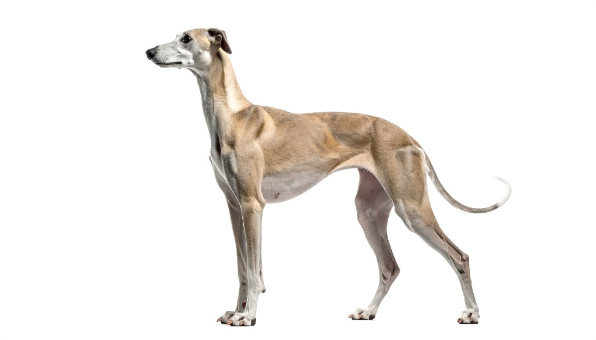

Design come
cortocircuito visivo.

Chi sono
- Roma
- Lituania
- 21 anni
- Design visivo
- Identità
- Fotografia
Sono una ragazza lituana che ha scelto di chiamare casa Roma, dopo aver trascorso molti anni in Friuli. Questo percorso mi ha dato uno sguardo aperto e ibrido, fatto di culture, lingue e sensibilità diverse che influenzano profondamente il mio modo di progettare.
Sono una designer dei diversi media: mi muovo tra digitale e visivo con curiosità, cercando sempre soluzioni creative e mai scontate. Mi interessa esplorare, sperimentare e trovare un linguaggio che sia autentico, evitando il più possibile la banalità.
Ho 21 anni e sono ancora in formazione. Studio, osservo e costruisco il mio percorso passo dopo passo, con l'obiettivo di crescere come designer e come persona, trasformando ogni esperienza in un'opportunità creativa.


Il mio design
Il mio design non è decorazione, è un cortocircuito visivo. La mia ossessione è una sola: catturare la tua attenzione e costringere lo sguardo a fermarsi. Non mi accontento di creare immagini che vengano "viste"; voglio immagini che ti entrino dentro, che ti forzino a confrontarti con la mia visione del mondo.
Uso colori saturi, primari — il rosso, il blu — che urlano visivamente, rompendo ogni equilibrio formale. Non cerco l'estetica perfetta, cerco l'energia grezza. Se guardi i miei lavori, non stai solo guardando della grafica: stai entrando nel mio modo di vedere le cose.